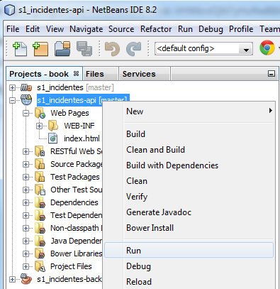
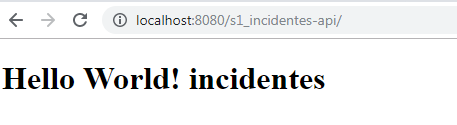

Para poder realizar este taller ud debe:
- Tener aprovisionada su máquina virtual para el curso ISIS2603. Si aún no lo ha hecho, por favor, vaya al curso en sicua y siga las instrucciones para obtener su máquina virtual y para acceder a ella.
- Tener su cuenta github asociada con su correo uniandes
- Haber aceptado la invitación a la organización github Uniandes-isis2603. Revise su correo con la invitación y no olvide revisar la bandeja de spam.
Temas a tratar
- Acceso a la máquina virtual con usuario estudiante
- Verificar que puede acceder a la organización
- Clonar el repositorio
- Abrir los proyectos
- Construir la aplicación
- Desplegar la aplicación
Una vez haya aprovisionado su máquina virtual debe ir a la página https://iscloud.virtual.uniandes.edu.co y en la pestaña "Elementos" seleccionar la máquina correspondiente al curso ISIS2603.
Anote la dirección IP de la máquina, la cual se puede consultar en la pestaña "Red".

Para conectarse a la máquina virtual, desde un equipo Windows debe abrir el programa "Conexión a Escritorio Remoto". También puede usar la opción Ejecutar (Tecla Windows + R) y luego escribir "mstsc".
En la ventana de conexión en la opción "Equipo" ingrese la IP anotada previamente.
Cuando le solicite las credenciales ingrese los siguientes datos:
- En nombre de usuario su login Uniandes seguido de @sis.virtual.uniandes.edu.co (por ejemplo j.bocanegra@sis.virtual.uniandes.edu.co)
- En contraseña ingrese la que usa para de Labsis
Cuando haya iniciado sesión se debe restablecer la contraseña de la cuenta estudiante, que es con la cual va a trabajar en el transcurso del semestre.
Para ello vaya al Panel de control > Cuentas de usuario > Cuentas de usuario > Administrar cuentas de usuario
Seleccione la cuenta "Estudiante" y haga clic en el botón "Restablecer contraseña...". Ingrese una contraseña segura que pueda recordar fácilmente.
Luego, siempre que inicie sesión deberá usar las siguientes credenciales:
- En nombre de usuario: estudiante
- En contraseña: la nueva clave ingresada
Organización github del curso
En github existe la organización https://github.com/Uniandes-isis2603 donde se encuentran creados los grupos (teams) y los repositorios de los proyectos de cada equipo.
Para poder acceder a su repositorio ud debe:
- Aceptar la invitación que le llegó de github en donde se le pedía ser parte de un team llamado sX_nombreProyecto (donde la X corresponde al número de su sección y nombreProyecto al nombre abreviado del enunciado de su proyecto.
- Una vez que acepte la invitación, debe poder ver el repositorio de su grupo. El nombre de este repositorio es: sX_nombreProyecto_201920.
Se requiere configurar, desde la línea de comandos de la máquina virtual, el usuario que hace los commits en git.
Si esto no se hace todos los commits aparecerán realizados por el usuario "estudiante"; por tanto, no será posible argumentar la autoría de los commits y esto tendrá un impacto negativo en el seguimiento semanal del proyecto.
Una vez haya abierto la línea de comandos ingrese las siguientes instrucciones:
git config --global user.name "su nombre"
git config --global user.email sulogin@uniandes.edu.co
Instrucciones básicas
Para clonar un repositorio de github, es decir crear una copia en su máquina del repositorio en github y guardar información para su posterior sincronización, ud debe:
- Estar logueado en la máquina virtual con el usuario estudiante
- Estar ubicado en una carpeta donde va a crear la copia del repositorio
- Tener la url del repositorio que va a clonar
- Tener instalado en la máquina donde va a clonar un cliente de git. Este puede ser git, github cliente, o el cliente que viene por defecto con Netbeans.
Para el caso del proyecto del curso, en su máquina virtual ya está instalado tanto el cliente de git (en la línea de comandos) como el IDE Netbeans que tiene un cliente de git.
En el siguiente video se explica cómo clonar desde Netbeans un repositorio github. Siga las instrucciones pero utilice la url del repositorio que va a clonar.
URL del repo que se va a clonar
En github.com localice el repositorio que va a clonar, seleccione "Clone or download" y copie la url:
Clonar desde Netbeans
Desde Netbeans seleccione en el menú superior Teams > Git > Clone:
En la imagen está señalada: la url de repositorio, las credenciales para ingresar a github (que debe cambiar por sus propias credenciales), la carpeta en su máquina donde quedará el repositorio que está clonando.
Clonar desde línea de comandos
Desde una línea de comandos vaya a la carpeta de su preferencia e ingrese el comando
git clone url
donde url corresponde a la dirección del repositorio (por ejemplo, https://github.com/Uniandes-isis2603/s4_Servicios_201920.git)
Luego aparecerá una ventana emergente en la que se le pedirán las credenciales de github.
Una vez finalizada la clonación ud debe abrir los tres proyectos, como se muestra en la imagen:
El proyecto principal, que para este ejemplo se llama s1_incidentes, contiene dos módulos (que son a su vez proyectos): uno contendrá el código de la capa de servicios o API Rest y el otro el back que contendrá tanto la capa de lógica como la de la persistencia.
Construir (build) la aplicación es un proceso que empaqueta en un zip, siguiendo una estructura predefinida, el proyecto compilado y todos los archivos de configuración que se necesitan para que se pueda ejecutar.
Este proceso de construcción se hace automáticamente seleccionado el proyecto principal, haciendo click derecho y luego Clean and build
La primera vez que se hace este proceso se puede tardar un tiempo considerable ya que se van a descargar, localmente, las librerías que se necesitan para el proyecto.
AL finalizar el proceso de descargue y compilación de las fuentes, debe aparecer el mensaje "BUILD SUCCESS".
El resultado del empaquetado ud lo puede ver en la vista "Files" en el proyecto -api en la carpeta target como se muestra en la figura:
Note que el archivo tiene extensión war (web archive). Si lo abre, puede notar que contiene archivos java compilados (.class) y archivos de configuración (.xml).
Desplegar la aplicación significa mover el empaquetado que se construyó en el paso anterior al servidor de aplicaciones donde se ejecutará.
En el ambiente de desarrollo local ejecutaremos un servidor de aplicaciones llamado payara (en el puerto 8080) y allí desplegamos la aplicación.
Ya está configurado en Netbeans el comando que lanza el servidor y que mueve el empaquetado dentro de éste. Para ejecutar este comando, seleccionamos el proyecto -api , click derecho y damos Run.

La primera vez, antes de crear la base de datos vamos a obtener un error (el false de la última línea).
Para saber cuál fue el error debemos ir a la pestaña de Payara Server e identificar el problema. En la imágen siguiente, vemos que la base de datos del proyecto no existe (en el ejemplo, está buscando una base de datos llamada incidentes).
Para resolver el problema debemos crear la base de datos. Para esto vamos a la pestaña Services y allí seleccionamos, sobre Java DB, create Database:
Escribimos el nombre. No hay necesidad de definir seguridad sobre esta base de datos dado que se trata de una base de datos local en nuestra propia máquina.
Al ejecutar nuevamente el comando Run, podemos ver que el despliegue se realizó de manera correcta.
Adicionalmente, se abrirá una nueva ventana del navegador que muestra el siguiente mensaje, indicando que todo está OK.

Olvide la IP de mi MV y no sé dónde buscarla.
Vaya a https://iscloud.virtual.uniandes.edu.co/vcac ingrese con su login y su clave de labsis. Recuerde que el login debe ir después de sis\ ejemplo:
login sis\af.carrero45
Vaya a Elementos y busque la información de Red
Es importante ingresar con login Estudiante a mi MV?
Si. De lo contrario no tendrá el ambiente completo instalado. Vaya al paso 2 de este tutorial donde se explica cómo ingresar con la cuenta Estudiante.
Trato de ejecutar Clean&Build y me sale el error:
Failed to execute goal org.apache.maven.plugins:maven-clean-plugin:2.4.1:clean
Esto se debe a que se intenta borrar el archivo que está desplegado (con el comando Clean) pero el servidor de aplicaciones Payara lo tiene abierto. Para resolver el problema debe primero detener el servidor dando clic en el botón rojo como se muestra en la figura:
Después de clonar los proyectos, al abrirlos en Netbeans, sale al lado del nombre un Unloadable
Probablemente Ud. ingresó a su máquina virtual con su login y no con el login=Estudiante